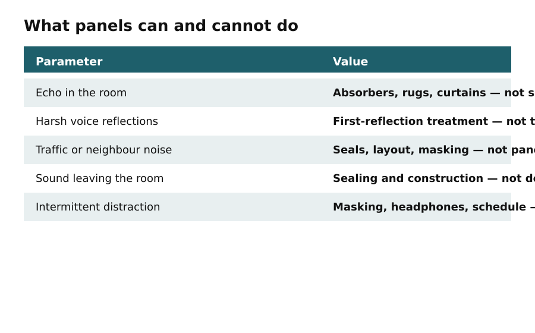

Day 1
Name the problem before you buy panels
In this apartment
Situation: A renter's desk sits by a window. Traffic is loud, and clapping in the room also rings. Decision: separate incoming noise from in-room echo before shopping.
Panels treat reflections inside the room. They do not block the street.
Today's output: a one-line diagnosis — echo, incoming noise, sound leaving the room, intermittent distraction, or a mix — plus what you will not promise this project.

What acoustic panels can and cannot do. Acoustic panels primarily reduce reflections and reverberation inside a room. They can make speech clearer, reduce harshness, and make the space feel calmer. They do not reliably block traffic, neighbours, construction noise, or sound passing through walls. Decorative panels are not soundproofing. A higher percentage of covered wall does not automatically produce a better study room.
Sit at the desk. Clap and speak. If the room rings or your voice sounds hard, reflections are part of the story. If a truck or a neighbor is still the main event with the window closed, that is incoming noise. Footsteps from above are usually impact noise; surface panels will not solve it. Do not permanently seal windows, block vents, or interfere with exits.
A phone SPL app can compare a quiet hour and a busy hour on the same device. It cannot certify a 40–45 dB study. Record the reading as a personal comparison only.
Do this
- Write echo / incoming / leaving / mix.
- Note window, door, shared wall, and fan sources.
- Do not order panels yet.
Today's output
- Diagnosis written
- Sources listed
- No purchase yet